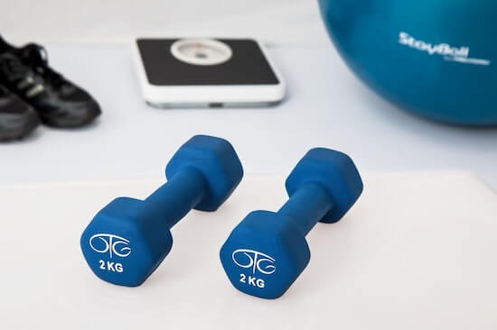

3 Main Reasons You Regained Weight
The reasons for regaining all the weight you lost are:
1. Focusing too much on calories and not the type of calories
2. Making severe calorie restrictions instead of incorporating intermittent fasting
3. Focusing too much on exercise and setting unrealistic weight loss deadlines
Reason #1: Focusing Too Much on Calories and Not the Type of Calories
We are constantly fed the story that eating too many calories is the main culprit for being overweight. After speaking with your neighborhood fitness trainer, what do you decide to do? Limit your daily calorie count to 80 to 85% of your daily maximum calorie intake, so theoretically, you burn a pound of fat at the end of the week.
You don’t care what you eat as long as you eat 80 to 80% of your daily maximum calorie intake. When you do this, you do indeed lose weight in the beginning and feel great.
Then, you re-adjust your overall calorie intake to continue the fat-burning process. This process goes on for three months and you look fantastic. You’re extremely proud of yourself and post your before and after picture to Instagram.
Now, if your body hasn’t made the proper switch to using fat reserves as an energy source instead of food, you might be in trouble. Your weight loss is bound to be short-lived.
This happens in most diets that include a healthy dose of carbohydrates. The weight loss is only being achieved because the body is continuously being worked and calories restricted. This calorie restriction and excision on the body results in a lower Basal Metabolic Rate (BMR), which makes your body burn less energy going forward.
By restricting calorie intake instead of switching energy sources, the body goes into preservation mode. It thinks you might be starving, so it works even harder to preserve the fat reserves you have.
Thus, after you go back to your regular ways (without the intense exercise and calorie restriction), the body slowly regains all initial weight because you are now stuck with a lower BMR. Your body is burning significantly less energy than it did before you began your workout plan and diet.
SOLUTION
Instead of simply eating anything to meet the 80 to 85% of your daily maximum calorie intake, focus on foods that help keep insulin levels low. A diet like the keto diet can help you achieve this.
When your body is depleted of carbohydrates, it is forced to tap into your fat reserves. By tapping into your fat reserves, your BMR increases. So now, you burn more energy going forward.
Reason #2: Making Severe Calorie Restrictions Instead of Incorporating Intermittent Fasting
When you make severe calorie restrictions in your diet, you lose weight initially (this could also just be water weight). This is not sustainable as you eventually get so hungry that you eat anything in sight.
A study was done to test the effects of severe calorie restriction on healthy males after World War 2. What they found was participants going bananas as their daily calories were being slowly lowered.
By giving the body reduced calories per day, the body was unable to make the switch to using its fat reserve as an energy source.
A similar study was done to test the effects of fasting on humans. Like you would expect, the participants initially felt horrible for the first two days of fasting. But once the initial hurdle was overcome, participants noticed an increase in energy with no real hunger issues.
Without any carbohydrates (i.e., glucose), the body was forced to tap into its fat reserves of which we all have plenty and feed itself. Thus, the body was able to achieve its daily calorie need by simply burning more fat. It wasn’t able to achieve this in the severe calorie restriction study.
SOLUTION
We fast when we sleep. By incorporating intermittent fasting with the keto diet, you help extend that daily fast.
Time restricted eating help burn significantly more fat. A diet like a keto diet keeps insulin levels low and this, in turn, helps you burn more fat.
Reason #3 Focusing Too much on Exercise and Setting Unrealistic Weight Loss Deadlines
Just think about the show ‘The Biggest Loser’. Almost all those participants exercised their hearts out. Some lost more than 50% of their body fat during that short time period. They looked fantastic. The winners went on talk shows and became celebrities overnight.And then, almost a year later, almost all the participants gained back all the weight. Plus, more. How did this happen? How was it possible for the same individuals to gain back all the weight? Since filming was restricted to a set time, participants were required to achieve ALL their required weight loss during that set period.
In order to hit their targets, participants were required to work out 10 to 12 hours a day while eating a very restricted diet. The restriction in the diet caused their BMR to drop significantly and this, in turn, resulted in their bodies burning much less energy to survive.
After the show concluded and the grueling workouts came to a halt, their BMRs were now significantly lower than what it used to be.

For example, if an individual initially weighed 350 pounds and after the show weighed 200 lbs, that same individual had a BMR that was of a 150 pounds individual, instead of 200 pounds. Thus, in order for the same individual to maintain their current weight, they would be required to eat significantly less calories. Thus, within a year of filming, almost all individuals regained their original weight.
SOLUTION
Set a time frame of 2 to 3 years instead of a few months with a well-planned keto diet.
This will almost certainly help you reach your weight loss goals without the worry of regaining that weight.
Key Takeaways
1. Focus on losing weight for the long term and set a slow and steady pace of achieving that goal. Losing weight is a marathon, not a sprint.
2. Eat food that helps keep your insulin levels low (like a keto diet) instead of focusing on the type of calories to eat.
3. Incorporate intermittent fasting instead of severe calorie restriction when planning out your diet.
If you are interested in figuring out your current body fat percentage, check out our free A.I. Body Fat Calculator
Get One Free Daily Motivational Quote to Your Email
Disclaimer
None of the website's content is meant to be taken as medical advice.
Speak to your healthcare professional for medical advice
I Lov Guitars Inc. will not be held liable for any claim, damage or other liability arising from, out, or in connection with using this web application and its content.
As a way of generating revenue to sustain this web app, estimatebodyfat.com is a member of Amazon’s Affiliate program and Clickbank's Affiliate Program and may earn a commission if you decide to buy any of the products recommended.